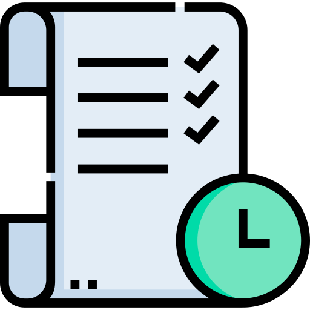

{% extends 'Home.html' %} {% block content %} {% load crispy_forms_tags %}
<br />
<br />
<h1 class="text-center">Gestión de Tareas</h1>
<hr class="hr-blurry" />

<div class="row px-5">
  <div class="col-lg-7 my-3">
    <div class="card">
      <div class="card-body">
        <h2>Editar Tarea Subordinada</h2>
        <hr />
        <form method="post">
          {% csrf_token %} {{ form | crispy }}

          <div class="d-flex justify-content-around">
            <input type="reset" value="Cancelar" class="btn btn-danger" />
            <input
              type="submit"
              value="Guardar"
              class="btn btn-primary"
              style="background-color: #5c6bc0"
            />
          </div>
        </form>
      </div>
    </div>
  </div>
  <div class="col-lg-5 my-3">
    <div class="row d-flex justify-content-center">
      <h2 class="text-center">Opciones</h2>
      <hr class="hr-blurry" />
      
      <br />
      <br />
      <br />
      <h5 class="text-center" >* Si desea Terminar la Tarea, Por favor cambie el estado de Avance. *</h5>
      <a
        type="button"
        class="btn btn-primary btn-lg"
        style="background-color: #5c6bc0"
        href="{% url 'listar_tareassub' %}"
        >Listar Tareas</a
      >
    </div>
  </div>
</div>

{% endblock content %}